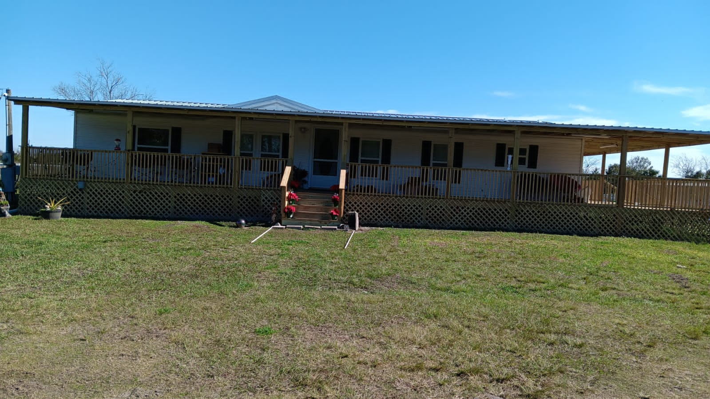

Villa de historia.
Lugar para disfrutar de una vista en casa tradicional.

Cuidando de lo principal.
Nos distinguen los Olivos. Su cuidado y preservacion nos importa.

Productos de buena calidad.
Todo cuanto ofrecemos posee garante y sabor de calidad internacional.
Olive Land Farms.
Una familia como el olivo.
 Olive Land Farms
Olive Land Farms